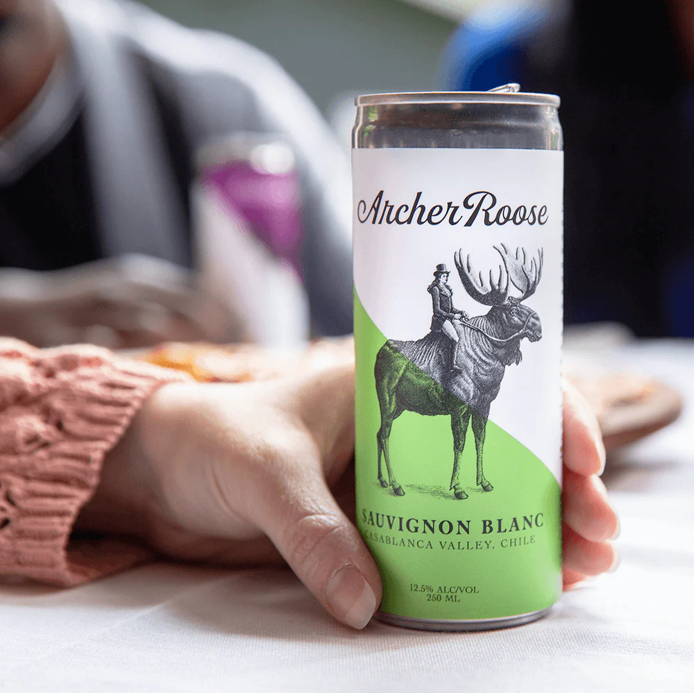

Immediately following harvest, the skin and seeds are removed and the sauvignon blanc grapes are pressed and settled via cold static decanting over a 24-hour period. A selection of dry yeasts are added to start the process of fermentation, at a maintained temperature of 59-60°F.
Luca Hodgkinson, a renaissance man, was Archer Roose's first winemaking partner. He has made wine on three continents and speaks five languages. Born and raised in Barcelona, Luca studied Oenology and Viticulture in France and earned his Master's Degree from the Faculte d'Oenologie de Talence. Before making wine for Archer Roose, he was the Technical Manager for Francois Lurton, where he converted their vineyards to organic viticulture. Luca still makes the wine for his family's estate in Priorat, returning every year for harvest.
Our sauvignon blanc grapes were raised with no herbicides or pesticides. Our vineyard is located in the middle of Casablanca Valley, between the Andes and the Pacific Ocean. The grape rows run east to west, allowing only one side of the canopy to be exposed to the sun to prevent overexposure. Ours is one of the last plots to be harvested, as the high clay content keeps the soil more cool, slowing ripening.
Sauvignon Blanc is celebrated for its unmistakable “green” flavor notes and bright acidity. A bright nose, citrus, and distinct green bell pepper tasting notes make our sauvignon blanc wine pairings well suited for When thinking about dishes and flavors to pair with wine, Chef Adam has a good piece of advice, “What grows together, goes together!”
* Herb-forward dishes or cuisines
* Chicken
* Tofu
* Soft, flavorful cheeses (goat cheese, feta)
* Grilled fish or seafood
* Green peppers, olives, avocado, tomato
Chef Adam Moore took inspiration from Argentinian crops and regional flavors for his Chilean-Inspired Cauliflower Steak recipe. Local ingredients such as brown rice, olives, and quinoa work harmoniously with Archer Roose Sauvignon Blanc for this flavorful and filling vegetarian dish.